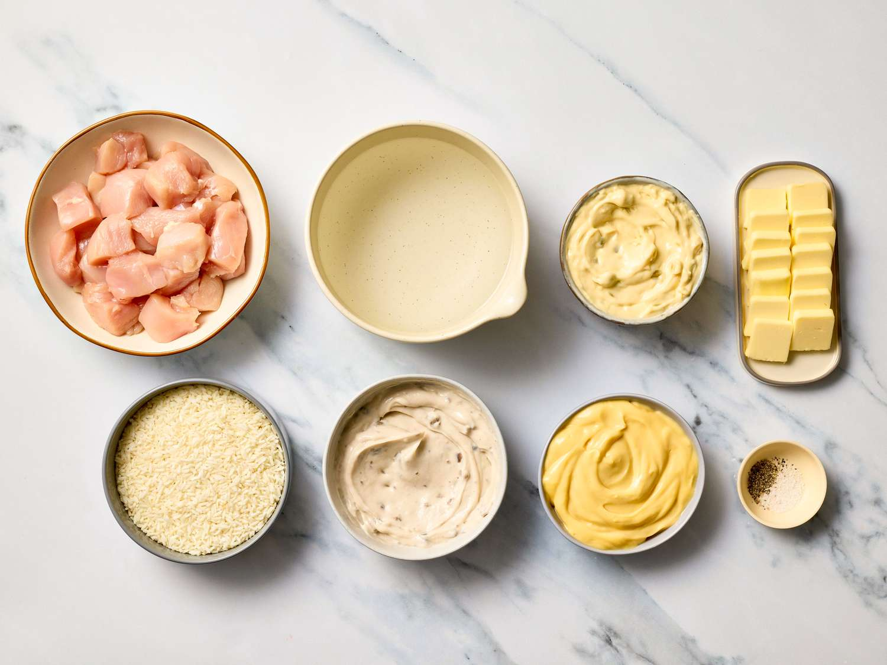
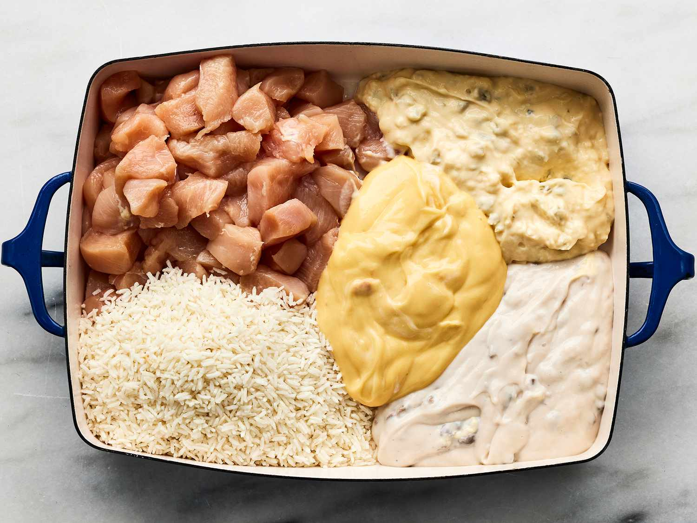
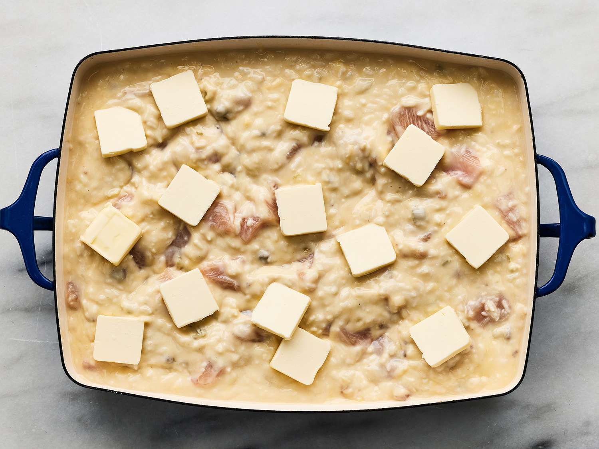
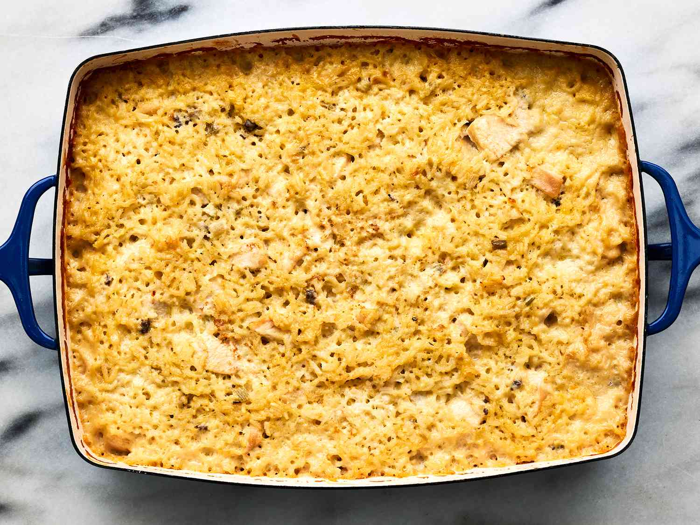

Mamaw's Chicken and Rice Casserole

Mamaw's Chicken and Rice Casserole Recipe
This affordable, simple, and delicious dish is easy to make and store.
The prep time is 10 minutes and cook time is 1 hour. Plan to spend an additional 10 minutes buffer.
This recipes yields 6 servings in a 9x13-inch casserole tray.
Ingredients:
- 3 chicken breasts, cut into cubes
- 2 cups water
- 2 cups instant white rice
- 1 (10.5 ounce) can cream of chicken soup
- 1 (10.5 ounce) can cream of celery soup
- 1 (10.5 ounce) can cream of mushroom soup
- salt and ground black pepper to taste
- 1/2 cup butter, sliced into pats
Steps:
- Gather all ingredients. Preheat the oven to 400 degrees F (200 degrees C). Grease sides and bottom of a casserole dish.

- Stir chicken, water, rice, cream of chicken soup, cream of celery soup, and cream of mushroom soup together in the prepared casserole dish; season with salt and pepper.

- Arrange butter evenly over the top of the chicken mixture.

- Bake in the preheated oven until the rice is tender and the chicken is cooked through, 1 hour to 75 minutes.

- Cool 10 to 15 minutes before serving. Enjoy!
Home